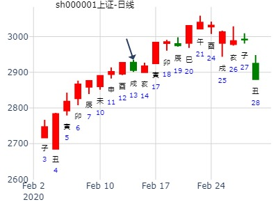
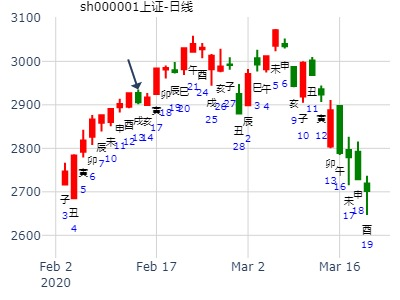
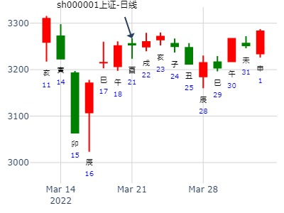
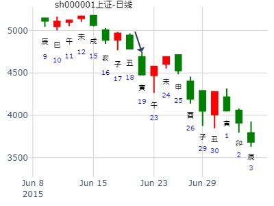
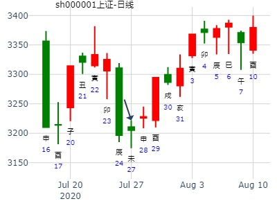
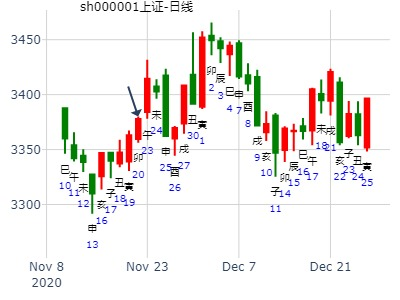

此卦世应分别值日月时，容易大涨。
主帖标题: 浅谈2.23日大盘走势
2011年 2月 22日 15时 0分 (起卦方式：手动指定)
干支：辛卯年 庚寅月 戊申日 庚申时 日空亡：寅卯
神煞：驿马－寅 桃花－酉 日禄－巳 贵人－丑，未
震宫：雷地豫 (六合) 乾宫：火地晋 (游魂)
六神 伏神 本 卦 变 卦
朱雀 妻财戌土 ▅▅ ▅▅ ╳→ 子孙巳火 ▅▅▅▅▅
青龙 官鬼申金 ▅▅ ▅▅ 妻财未土 ▅▅ ▅▅
玄武 子孙午火 ▅▅▅▅▅ 应 官鬼酉金 ▅▅▅▅▅ 世
白虎 兄弟卯木 ▅▅ ▅▅ 兄弟卯木 ▅▅ ▅▅
螣蛇 子孙巳火 ▅▅ ▅▅ 子孙巳火 ▅▅ ▅▅
勾陈 父母子水 妻财未土 ▅▅ ▅▅ 世 妻财未土 ▅▅ ▅▅ 应
老怪鬼谈：看动爻财爻，月克变爻生，长生于日建，有气旺相，兄弟爻空亡，月扶日克，动爻泄气，综合比较，整体看涨，月克财，前期涨中有跌，化子孙，资金有跟进，巳火与日建鬼爻合，后市有盘整，震荡行情。看涨收红，其他无语~参考
占事：000750国海证券下周走势如何？上上卦,豫之晋.md
时间: 2019-02-10 8时37分
干支: 己亥年丙寅月戊寅日丙辰时 (旬空: 申酉 )
雷地豫 火地晋(游魂)
六神 伏神 本 卦 变 卦
朱雀 ▅▅ ▅▅ 妻财戌土 Ｘ→ ▅▅▅▅▅ 子孙巳火
青龙 ▅▅ ▅▅ 官鬼申金 ▅▅ ▅▅ 妻财未土
玄武 ▅▅▅▅▅ 子孙午火 应 ▅▅▅▅▅ 官鬼酉金 世
白虎 ▅▅ ▅▅ 兄弟卯木 ▅▅ ▅▅ 兄弟卯木
腾蛇 ▅▅ ▅▅ 子孙巳火 ▅▅ ▅▅ 子孙巳火
勾陈 父母子水▅▅ ▅▅ 妻财未土 世 ▅▅ ▅▅ 妻财未土 应
上六：冥豫，成有渝，无咎。
主帖标题: 2月3-7日本周股票财运
色子卦
公历时间：2020年2月3日9时34分
干 支：己亥年 丁丑月 丙子日 癸巳时
旬 空：辰巳 申酉 申酉 午未
神 煞：驿马─寅 桃花─酉 日禄─巳 贵人─酉，亥
震宫：雷地豫（六合） 乾宫：火地晋（游魂）
六神 伏 神 【本 卦】 【变 卦】
青龙 ▄▄ ▄▄ 妻财庚戌土 × ▄▄▄▄▄ 子孙己巳火
玄武 ▄▄ ▄▄ 官鬼庚申金 ▄▄ ▄▄ 妻财己未土
白虎 ▄▄▄▄▄ 子孙庚午火 应 ▄▄▄▄▄ 官鬼己酉金 世
螣蛇 ▄▄ ▄▄ 兄弟乙卯木 ▄▄ ▄▄ 兄弟乙卯木
勾陈 ▄▄ ▄▄ 子孙乙巳火 ▄▄ ▄▄ 子孙乙巳火
朱雀 父母庚子水 ▄▄ ▄▄ 妻财乙未土 世 ▄▄ ▄▄ 妻财乙未土 应

主帖标题: T-Z-D上证指数擂台赛第六场第4局（2020年2月13日）Z方
公历起卦时间：2020年2月13日9时2分 (手工指定)
干支：庚子年 戊寅月 丙戌日 癸巳时 （日空：午未）
神煞：驿马－申 桃花－卯 日禄－巳 贵人－酉，亥
震宫：雷地豫 (六合) 乾宫：火地晋 (游魂)
六神 伏神 本 卦 变 卦
青龙 妻财庚戌土 ▅▅ ▅▅ ╳→ 子孙己巳火 ▅▅▅▅▅
玄武 官鬼庚申金 ▅▅ ▅▅ 妻财己未土 ▅▅ ▅▅
白虎 子孙庚午火 ▅▅▅▅▅ 应 官鬼己酉金 ▅▅▅▅▅ 世
腾蛇 兄弟乙卯木 ▅▅ ▅▅ 兄弟乙卯木 ▅▅ ▅▅
勾陈 子孙乙巳火 ▅▅ ▅▅ 子孙乙巳火 ▅▅ ▅▅
朱雀 父母庚子水 妻财乙未土 ▅▅ ▅▅ 世 妻财乙未土 ▅▅ ▅▅ 应
上六：冥豫，成有渝，无咎。象曰：冥豫在上，何可长也。


主帖标题: T-Z-D上证指数擂台赛第七场第1局（2020年2月17日）T方
起卦公历：2020年2月14日11时54分(北京时间)
起卦农历：二○二○年 正月 廿一日 午时。
干支： 庚子年 戊寅月 丁亥日 丙午时 (卦身：寅)寅
主变卦 雷地豫(震宫) 之 火地晋(乾宫) [空亡:午、未]
青龙 ━ ━× 妻财戌土 ━━━ 子孙巳火
玄武 ━ ━ 官鬼申金 ━ ━ 妻财未土
白虎 ━━━ 子孙午火 应 ━━━ 官鬼酉金 世
螣蛇 ━ ━ 兄弟卯木 ━ ━ 兄弟卯木
勾陈 ━ ━ 子孙巳火 ━ ━ 子孙巳火
朱雀 父子 ━ ━ 妻财未土 世 ━ ━ 妻财未土 应
◇上六:冥豫，成有渝。无咎。 象曰：冥豫在上，何可长也。
放个马后炮
此卦：亥日起卦，子孙巳火暗动生财爻，财爻又回头生，
寅日，虽克财，但巳火通关。涨。
主帖标题: 想今天买入一股，明天能得利不？
26日在占 677
公历时间：2020年2月26日9时32分
干 支：庚子年 戊寅月 己亥日 己巳时
旬 空：辰巳 申酉 辰巳 戌亥
神 煞：驿马─巳 桃花─子 日禄─午 贵人─子，申
中国预测网纳甲六爻排盘
震宫：雷地豫（六合） 乾宫：火地晋（游魂）
六神 伏 神 【本 卦】 【变 卦】
勾陈 ▄▄ ▄▄ 妻财庚戌土 × ▄▄▄▄▄ 子孙己巳火
朱雀 ▄▄ ▄▄ 官鬼庚申金 ▄▄ ▄▄ 妻财己未土
青龙 ▄▄▄▄▄ 子孙庚午火 应 ▄▄▄▄▄ 官鬼己酉金 世
玄武 ▄▄ ▄▄ 兄弟乙卯木 ▄▄ ▄▄ 兄弟乙卯木
白虎 ▄▄ ▄▄ 子孙乙巳火 ▄▄ ▄▄ 子孙乙巳火
螣蛇 父母庚子水 ▄▄ ▄▄ 妻财乙未土 世 ▄▄ ▄▄ 妻财乙未土 应
注：张三汉未说明是哪个677，看下来是000677可能性大。
下一个亥日冲实巳火，六爻的动变容易为最高点。
占事：上证癸卯年走势？QQ大道
时间：2023年2月4日10点55分 星期六
干支：癸卯年 甲寅月 癸巳日 丁巳时（旬空：午未）
六神 藏爻 雷地豫 震宫 火地晋 乾宫
白虎 ■■ ■■妻财戌土 ×→ 子孙巳火■■■■■■
腾蛇 ■■ ■■官鬼申金 妻财未土■■ ■■
勾陈 ■■■■■■子孙午火 应 官鬼酉金■■■■■■
朱雀 妻财辰土■■ ■■兄弟卯木 兄弟卯木■■ ■■
青龙 兄弟寅木■■ ■■子孙巳火 子孙巳火■■ ■■
玄武 父母子水■■ ■■妻财未土 世 妻财未土■■ ■■
六合卦 游魂卦

马后炮：豫卦六爻容易在巳月见顶。
主帖标题: 看好一股，涨跌如何？色子卦
公历时间：2020年3月18日13时51分 农历时间：庚子年 二月二十五日未时
干 支：庚子年 己卯月 庚申日 癸未时
旬 空：辰巳 申酉 子丑 申酉
神 煞：驿马─寅 桃花─酉 日禄─申 贵人─丑，未
震宫：雷地豫（六合） 乾宫：火地晋（游魂）
六神 伏 神 【本 卦】 【变 卦】
螣蛇 ▄▄ ▄▄ 妻财庚戌土 × ▄▄▄▄▄ 子孙己巳火
勾陈 ▄▄ ▄▄ 官鬼庚申金 ▄▄ ▄▄ 妻财己未土
朱雀 ▄▄▄▄▄ 子孙庚午火 应 ▄▄▄▄▄ 官鬼己酉金 世
青龙 ▄▄ ▄▄ 兄弟乙卯木 ▄▄ ▄▄ 兄弟乙卯木
玄武 ▄▄ ▄▄ 子孙乙巳火 ▄▄ ▄▄ 子孙乙巳火
白虎 父母庚子水 ▄▄ ▄▄ 妻财乙未土 世 ▄▄ ▄▄ 妻财乙未土 应
注：可能是600129 同贴不同楼问6129春天。另此贴未写预测时间长度
也可能是补码：600981

上证3.22二收盘走势？
公历起卦时间：2022年3月21日15时16分 (电脑自动)
干支：壬寅年 癸卯月 癸酉日 庚申时 （日空：戌亥）
震宫：雷地豫 (六合) 乾宫：火地晋 (游魂)
六神 伏神 本 卦 变 卦
白虎 妻财庚戌土 ▅▅ ▅▅ ╳→ 子孙己巳火 ▅▅▅▅▅
螣蛇 官鬼庚申金 ▅▅ ▅▅ 妻财己未土 ▅▅ ▅▅
勾陈 子孙庚午火 ▅▅▅▅▅ 应 官鬼己酉金 ▅▅▅▅▅ 世
朱雀 兄弟乙卯木 ▅▅ ▅▅ 兄弟乙卯木 ▅▅ ▅▅
青龙 子孙乙巳火 ▅▅ ▅▅ 子孙乙巳火 ▅▅ ▅▅
玄武 父母庚子水 妻财乙未土 ▅▅ ▅▅ 世 妻财乙未土 ▅▅ ▅▅ 应

占事：4.13-4.17上证涨跌
公历起卦时间：2015年4月12日21时33分 (报双数起卦-动爻加时辰)
干支：乙未年 庚辰月 戊午日 癸亥时 （日空：子丑）
震宫：雷地豫 (六合) 乾宫：火地晋 (游魂)
六神 伏神 本 卦 变 卦
朱雀 妻财庚戌土 ▅▅ ▅▅ ╳→ 子孙己巳火 ▅▅▅▅▅
青龙 官鬼庚申金 ▅▅ ▅▅ 妻财己未土 ▅▅ ▅▅
玄武 子孙庚午火 ▅▅▅▅▅ 应 官鬼己酉金 ▅▅▅▅▅ 世
白虎 兄弟乙卯木 ▅▅ ▅▅ 兄弟乙卯木 ▅▅ ▅▅
腾蛇 子孙乙巳火 ▅▅ ▅▅ 子孙乙巳火 ▅▅ ▅▅
勾陈 父母庚子水 妻财乙未土 ▅▅ ▅▅ 世 妻财乙未土 ▅▅ ▅▅ 应
变爻逢冲集结号：
豫之晋，财值世财化子，戌化巳，大涨。变爻值月逢冲不散案例。
600780个股周卦。(2009-05-09 18:14:17) O 林林(立)(37614423)
干支：己丑年 己巳月 癸丑日 壬戌时 (旬空：寅卯)
震宫：雷地豫（六合） 乾宫：火地晋（游魂）
六神 伏 神 【本 卦】 【变 卦】
白虎 ▅▅ ▅▅ 妻财庚戌土 ×→ ▅▅▅▅▅ 子孙己巳火
螣蛇 ▅▅ ▅▅ 官鬼庚申金 ▅▅ ▅▅ 妻财己未土
勾陈 ▅▅▅▅▅ 子孙庚午火 应 ▅▅▅▅▅ 官鬼己酉金 世
朱雀 ▅▅ ▅▅ 兄弟乙卯木 ▅▅ ▅▅ 兄弟乙卯木
青龙 ▅▅ ▅▅ 子孙乙巳火 ▅▅ ▅▅ 子孙乙巳火
玄武 父母庚子水 ▅▅ ▅▅ 妻财乙未土 世 ▅▅ ▅▅ 妻财乙未土 应
马后炮：
辰日冲旺戌，冲散，高开低走之象。
标准财化子，大黑马模式。变卦为晋，犹豫中一路涨。
1。辰日暴跌。莫非冲散上六爻戌土？ （动爻逢冲有点冲散之象）
2。巳日子孙旺，回头生妻财，涨。
3。午日小星
（冲起旬空子水，但世爻又被合，综合下来是星）
（合起未土，双土动，莫非三刑，故互相牵制，或是半合戌土，合绊住，涨不得）
4。未日世旺，涨。
5。申日合住子孙巳火，多头没法发力。小星。 （回头生中合住原神，无法生的另一例子）
6。亥日冲开合住的己火，涨停。（1。再先有合再有冲的情况下，不论冲散；2。或是变爻值月冲旺，不论冲走，还需收集变爻日冲卦例？）

518上证行情，豫之晋，财化子。上六爻青龙财。
占事:?518上证行情
起卦方式：手动摇卦 龙隐网
公历时间：2010年5月17日21时31分
干支：庚寅年辛巳月丁卯日辛亥时 旬空：午未 申酉 戌亥 寅卯
神煞：驿马─巳 桃花─子 日禄─午 贵人─酉，亥
震宫：雷地豫（六合） 乾宫：火地晋（游魂）?
六神? 伏 神?【本 卦】 【变 卦】
青龙 ▄▄ ▄▄ 妻财庚戌土 X ▄▄▄▄▄ 子孙己巳火
玄武 ▄▄ ▄▄ 官鬼庚申金 ▄▄ ▄▄ 妻财己未土
白虎 ▄▄▄▄▄ 子孙庚午火 应 ▄▄▄▄▄ 官鬼己酉金 世
螣蛇 ▄▄ ▄▄ 兄弟乙卯木 ▄▄ ▄▄ 兄弟乙卯木
勾陈 ▄▄ ▄▄ 子孙乙巳火 ▄▄ ▄▄ 子孙乙巳火
朱雀 父母庚子水 ▄▄ ▄▄ 妻财乙未土 世 ▄▄ ▄▄ 妻财乙未土 应
今天先跌，后大涨。收红。
辰日冲实戌财，涨。
518上证行情，豫之晋，财化子。上六爻青龙财。
男 占事: 518上证行情
起卦方式：手动摇卦 龙隐网(www.longyin.net)六爻线上排盘系统
公历时间：2010年5月17日21时31分
干支：庚寅年 辛巳月 丁卯日 辛亥时
旬空：午未 申酉 戌亥 寅卯
神煞：驿马─巳 桃花─子 日禄─午 贵人─酉，亥
震宫：雷地豫（六合） 乾宫：火地晋（游魂）
六神 伏 神 【本 卦】 【变 卦】
青龙 ▄▄ ▄▄ 妻财庚戌土 X-> ▄▄▄▄▄ 子孙己巳火
玄武 ▄▄ ▄▄ 官鬼庚申金 ▄▄ ▄▄ 妻财己未土
白虎 ▄▄▄▄▄ 子孙庚午火 应 ▄▄▄▄▄ 官鬼己酉金 世
螣蛇 ▄▄ ▄▄ 兄弟乙卯木 ▄▄ ▄▄ 兄弟乙卯木
勾陈 ▄▄ ▄▄ 子孙乙巳火 ▄▄ ▄▄ 子孙乙巳火
朱雀 父母庚子水 ▄▄ ▄▄ 妻财乙未土 世 ▄▄ ▄▄ 妻财乙未土 应
今天先跌，后大涨。收红。
主帖标题: 周易与金融------6
占买进000058如何
2013年5月23日12时20分 (手工指定)
丁巳月 己丑日 （日空：午未）
震宫：雷地豫 (六合) 乾宫：火地晋 (游魂)
勾陈 妻财庚戌土 ▅▅ ▅▅ ╳→ 子孙己巳火
朱雀 官鬼庚申金 ▅▅ ▅▅
青龙 子孙庚午火 ▅▅▅▅▅ 应
玄武 兄弟乙卯木 ▅▅ ▅▅
白虎 子孙乙巳火 ▅▅ ▅▅
腾蛇 父母庚子水 妻财乙未土 ▅▅ ▅▅ 世
丑4.75寅4.73 巳4.68午4.61未4.62申4.59酉4.49
子4.58丑4.42寅4.44卯4.28辰4.20
与先生您的卦相似。买进是要赔钱的。
马后炮：丑冲旬空世爻冲实，大涨。但寅巳午未日都没涨。因为继续旬空。然后辰巳空。反而当天就是顶。
风生水起 占事：洛阳钼业未来2周
起卦方式：手动摇卦
公历时间：2015年5月26日20时2分
干 支：乙未年 辛巳月 壬寅日 庚戌时
旬 空：辰巳 申酉 辰巳 寅卯
震宫：雷地豫（六合） 乾宫：火地晋（游魂）
六神 伏 神 【本 卦】 【变 卦】
白虎 ▄▄ ▄▄ 妻财庚戌土 × ▄▄▄▄▄ 子孙己巳火
螣蛇 ▄▄ ▄▄ 官鬼庚申金 ▄▄ ▄▄ 妻财己未土
勾陈 ▄▄▄▄▄ 子孙庚午火 应 ▄▄▄▄▄ 官鬼己酉金 世
朱雀 ▄▄ ▄▄ 兄弟乙卯木 ▄▄ ▄▄ 兄弟乙卯木
青龙 ▄▄ ▄▄ 子孙乙巳火 ▄▄ ▄▄ 子孙乙巳火
玄武 父母庚子水 ▄▄ ▄▄ 妻财乙未土 世 ▄▄ ▄▄ 妻财乙未土 应
本该大涨，却大跌几天。莫非子孙巳空的原因？
或按朱辰彬理论，官鬼申金得财爻戌土生的情况下论旺，逢寅冲则暗动。则与巳月寅日申爻形成三刑组合？、
马后炮: 还是旬空的作用，非得等亥日冲空才涨停。而巳日出空反而跌。
此处辰日冲旺戌，又出现冲高回落之象。同2009-05-09同名卦一样表现。
亥日大涨，又论冲实起卦时旬空。
主帖标题: 探讨：航天长峰何时涨停？
512航天长峰何时涨停？
出生：2020 年 性别：男 占事：没填
公历起卦时间：2020年5月12日17时35分 (电脑自动)
干支：庚子年 辛巳月 乙卯日 乙酉时 （日空：子丑）
神煞：驿马－巳 桃花－子 日禄－卯 贵人－子，申
震宫：雷地豫 (六合) 乾宫：火地晋 (游魂)
六神 伏神 本 卦 变 卦
玄武 妻财庚戌土 ▅▅ ▅▅ ╳→ 子孙己巳火 ▅▅▅▅▅
白虎 官鬼庚申金 ▅▅ ▅▅ 妻财己未土 ▅▅ ▅▅
螣蛇 子孙庚午火 ▅▅▅▅▅ 应 官鬼己酉金 ▅▅▅▅▅ 世
勾陈 兄弟乙卯木 ▅▅ ▅▅ 兄弟乙卯木 ▅▅ ▅▅
朱雀 子孙乙巳火 ▅▅ ▅▅ 子孙乙巳火 ▅▅ ▅▅
青龙 父母庚子水 妻财乙未土 ▅▅ ▅▅ 世 妻财乙未土 ▅▅ ▅▅ 应
巳月辰日经常出现冲空回落，旺戌被冲散之象。
上证指数2021.4.30戊申五-5.6甲寅、5.7乙卯五三天哪日顶？出生：2021 年 性别：男 占事：没填
排卦：元亨利贞网六爻在线排盘系统 https://www.china95.net
公历起卦时间：2021年5月4日7时42分 (电脑自动)
干支：辛丑年 壬辰月 壬子日 甲辰时 （日空：寅卯）
震宫：雷地豫 (六合) 乾宫：火地晋 (游魂)
六神 伏神 本 卦 变 卦
白虎 妻财庚戌土 ▅▅ ▅▅ ╳→ 子孙己巳火 ▅▅▅▅▅
螣蛇 官鬼庚申金 ▅▅ ▅▅ 妻财己未土 ▅▅ ▅▅
勾陈 子孙庚午火 ▅▅▅▅▅ 应 官鬼己酉金 ▅▅▅▅▅ 世
朱雀 兄弟乙卯木 ▅▅ ▅▅ 兄弟乙卯木 ▅▅ ▅▅
青龙 子孙乙巳火 ▅▅ ▅▅ 子孙乙巳火 ▅▅ ▅▅
玄武 父母庚子水 妻财乙未土 ▅▅ ▅▅ 世 妻财乙未土 ▅▅ ▅▅ 应

卯日出空跌。酉日冲实卯木又跌。
主帖标题: Q以岭药业5.30癸未星期一收盘走势？
公历起卦时间：2022年5月28日15时36分 (电脑自动)
干支：壬寅年 乙巳月 辛巳日 丙申时 （日空：申酉）
神煞：驿马－亥 桃花－午 日禄－酉 贵人－寅，午
震宫：雷地豫 (六合) 乾宫：火地晋 (游魂)
六神 伏神 本 卦 变 卦
螣蛇 妻财庚戌土 ▅▅ ▅▅ ╳→ 子孙己巳火 ▅▅▅▅▅
勾陈 官鬼庚申金 ▅▅ ▅▅ 妻财己未土 ▅▅ ▅▅
朱雀 子孙庚午火 ▅▅▅▅▅ 应 官鬼己酉金 ▅▅▅▅▅ 世
青龙 兄弟乙卯木 ▅▅ ▅▅ 兄弟乙卯木 ▅▅ ▅▅
玄武 子孙乙巳火 ▅▅ ▅▅ 子孙乙巳火 ▅▅ ▅▅
白虎 父母庚子水 妻财乙未土 ▅▅ ▅▅ 世 妻财乙未土 ▅▅ ▅▅ 应
马后炮：日月同，子孙巳火太旺反跌。
“每日一卦测大盘”—— 2014年6月23日周一走势。
公历起卦时间：2014年6月22日22时55分
干支：甲午年 庚午月 甲子日 乙亥时 （日空：戌亥）
震宫：雷地豫 (六合) 乾宫：火地晋 (游魂)
六神 伏神 本 卦 变 卦
玄武 妻财庚戌土 ▅▅ ▅▅ ╳→ 子孙己巳火 ▅▅▅▅▅
白虎 官鬼庚申金 ▅▅ ▅▅ 妻财己未土 ▅▅ ▅▅
腾蛇 子孙庚午火 ▅▅▅▅▅ 应 官鬼己酉金 ▅▅▅▅▅ 世
勾陈 兄弟乙卯木 ▅▅ ▅▅ 兄弟乙卯木 ▅▅ ▅▅
朱雀 子孙乙巳火 ▅▅ ▅▅ 子孙乙巳火 ▅▅ ▅▅
青龙 父母庚子水 妻财乙未土 ▅▅ ▅▅ 世 妻财乙未土 ▅▅ ▅▅ 应
10:40:48
大道至简 2014-6-23 10:40:48
今天己经戌亥空了。
九戒 2014-6-23 10:41:14
是啊 财空。全天横盘。丑日。丑冲未暗动也没涨。
主帖标题: 6-19周五山煤国际预测
公历：2015年6月19日9时30分，星期五。
干支：乙未年 壬午月 丙寅日 癸巳时 (卦身：午)
主变卦 雷地豫(震宫) 之 火地晋(乾宫) [空亡:戌、亥]
青龙 ▅▅ ▅▅×妻财庚戌土 ▅▅▅▅▅ 子孙己巳火
玄武 ▅▅ ▅▅ 官鬼庚申金 ▅▅ ▅▅ 妻财己未土
白虎 ▅▅▅▅▅ 子孙庚午火 应 ▅▅▅▅▅ 官鬼己酉金 世
螣蛇 ▅▅ ▅▅ 兄弟乙卯木 ▅▅ ▅▅ 兄弟乙卯木
勾陈 ▅▅ ▅▅ 子孙乙巳火 ▅▅ ▅▅ 子孙乙巳火
朱雀 父母庚子水 ▅▅ ▅▅ 妻财乙未土 世 ▅▅ ▅▅ 妻财乙未土 应

戌空又逢兄弟值班，跌。
风生水起 占事：中信海直000099?未来二周?公历：2015年7月17日11时
干支：乙未年?癸未月?甲午日?庚午时 旬空：?(辰巳)??
震宫：雷地豫（六合） 乾宫：火地晋（游魂）?
六神? 伏 神?【本 卦】 【变 卦】
玄武 ▄▄ ▄▄ 妻财庚戌土 X-> ▄▄▄▄▄ 子孙己巳火
白虎 ▄▄ ▄▄ 官鬼庚申金 ▄▄ ▄▄ 妻财己未土
螣蛇 ▄▄▄▄▄ 子孙庚午火 应 ▄▄▄▄▄官鬼己酉金 世
勾陈 ▄▄ ▄▄ 兄弟乙卯木 ▄▄ ▄▄ 兄弟乙卯木
朱雀 ▄▄ ▄▄ 子孙乙巳火 ▄▄ ▄▄ 子孙乙巳火
青龙父母子水▄▄ ▄▄ 财乙未土世 ▄▄ ▄▄ 财乙未土 应
辰日在此卦屡屡出现冲高回落之象，然后次日就是巳涨。
世应值日月，巳空也不管。涨。
亥日冲实巳火，反而涨。
【经典的动爻逢冲】困之未济，8月第3周大盘。官父兄连动。
精武门陈真：性别：男 占测：7月27日-31日大盘。豫之晋
公元：2020年7月26日13时25分
干支：庚子年 癸未月 庚午日 癸未时 (戌亥)
豫 卦 蹇 卦 晋 卦 小畜卦 谦 卦
▆ ▆ ☉ ▆ ▆ ▆▆▆ ▆▆▆ ▆ ▆
用 ▆ ▆ ▆▆▆ ▆ ▆ ▆▆▆ ▆ ▆
▆▆▆ ▆ ▆ ▆▆▆ ▆ ▆ ▆ ▆
▆ ▆ ▆▆▆ ▆ ▆ ▆▆▆ ▆▆▆
体 ▆ ▆ ▆ ▆ ▆ ▆ ▆▆▆ ▆ ▆
▆ ▆ ▆ ▆ ▆ ▆ ▆▆▆ ▆ ▆
[本卦] [互卦] [变卦] [错卦] [综卦]
雷地豫 火地晋(游魂)
六神 伏神 本 卦 变 卦
腾蛇 ▅▅ ▅▅ 妻财戌土 Ｘ→ ▅▅▅▅▅ 子孙巳火
勾陈 ▅▅ ▅▅ 官鬼申金 ▅▅ ▅▅ 妻财未土
朱雀 ▅▅▅▅▅ 子孙午火 应 ▅▅▅▅▅ 官鬼酉金 世
青龙 ▅▅ ▅▅ 兄弟卯木 ▅▅ ▅▅ 兄弟卯木
玄武 ▅▅ ▅▅ 子孙巳火 ▅▅ ▅▅ 子孙巳火
白虎 父母子水▅▅ ▅▅ 妻财未土 世 ▅▅ ▅▅ 妻财未土 应
世应值月日，就不管戌空，直接涨了。

002506协鑫集成8月一个月走势。豫之晋。金玉堂
时间: 2022-07-24 22时26分
干支: 壬寅年丁未月戊寅日癸亥时 (旬空: 申酉 )
雷地豫 火地晋(游魂)
六神 伏神 本 卦 变 卦
朱雀 ▅▅ ▅▅ 妻财戌土 Ｘ→ ▅▅▅▅▅ 子孙巳火
青龙 ▅▅ ▅▅ 官鬼申金 ▅▅ ▅▅ 妻财未土
玄武 ▅▅▅▅▅ 子孙午火 应 ▅▅▅▅▅ 官鬼酉金 世
白虎 ▅▅ ▅▅ 兄弟卯木 ▅▅ ▅▅ 兄弟卯木
腾蛇 ▅▅ ▅▅ 子孙巳火 ▅▅ ▅▅ 子孙巳火
勾陈 父母子水▅▅ ▅▅ 妻财未土 世 ▅▅ ▅▅ 妻财未土 应
上六：冥豫，成有渝，无咎。
马后炮：官鬼冲实暗动，涨不动了?

主帖标题: 8月30日收盘买入金陵饭店，小赌一回!
求测人：某人，男，庚申(1980年)，自动起卦(起卦方式)
占问事宜：金陵明天升降自动卦
公历：2016年8月30日19时18分，星期二。
干支：丙申年 丙申月 甲申日 甲戌时 (卦身：午)
主变卦 雷地豫(震宫) 之 火地晋(乾宫) [空亡:午、未]
玄武 ▅▅ ▅▅×妻财庚戌土 ▅▅▅▅▅ 子孙己巳火
白虎 ▅▅ ▅▅ 官鬼庚申金 ▅▅ ▅▅ 妻财己未土
螣蛇 ▅▅▅▅▅ 子孙庚午火 应 ▅▅▅▅▅ 官鬼己酉金 世
勾陈 ▅▅ ▅▅ 兄弟乙卯木 ▅▅ ▅▅ 兄弟乙卯木
朱雀 ▅▅ ▅▅ 子孙乙巳火 ▅▅ ▅▅ 子孙乙巳火
青龙 父母庚子水 ▅▅ ▅▅ 妻财乙未土 世 ▅▅ ▅▅ 妻财乙未土 应
世应皆空。官鬼又旺。辰日又现冲高回落。
香农芯创到下周五-金-自动卦
时间: 2024-10-10
干支: 甲辰年甲戌月丁未日 (旬空: 寅卯 )
雷地豫 火地晋(游魂)
六神 伏神 本 卦 变 卦
青龙 ▅▅ ▅▅ 妻财戌土 Ｘ→ ▅▅▅▅▅ 子孙巳火
玄武 ▅▅ ▅▅ 官鬼申金 ▅▅ ▅▅ 妻财未土
白虎 ▅▅▅▅▅ 子孙午火 应 ▅▅▅▅▅ 官鬼酉金 世
腾蛇 ▅▅ ▅▅ 兄弟卯木 ▅▅ ▅▅ 兄弟卯木
勾陈 ▅▅ ▅▅ 子孙巳火 ▅▅ ▅▅ 子孙巳火
朱雀 父母子水▅▅ ▅▅ 妻财未土 世 ▅▅ ▅▅ 妻财未土 应
上六：冥豫，成有渝，无咎。
主帖标题: 今天睡了一天，5点醒来一看，国风塑业 跌了我几千
000859
己亥 乙亥 己未 己巳 (子丑空) (2019/11/18 09:25:13)
雷地豫 火地晋
勾陈 妻财戌土 × 子孙巳火 ／
朱雀 官鬼申金 ∥ 妻财未土 ∥
青龙 子孙午火 ／ 应 官鬼酉金 ／ 世
玄武 兄弟卯木 ∥ 兄弟卯木 ∥
白虎 子孙巳火 ∥ 子孙巳火 ∥
父母子水：腾蛇 妻财未土 ∥ 世 妻财未土 ∥ 应

马后炮：此卦共同特征：卯日易大涨。
主帖标题: 11月23至11月27日大盘预测卦例收集
2、公历时间：2020年11月20日22时56分
干 支：庚子年 丁亥月 丁卯日 辛亥时
旬 空：辰巳 午未 戌亥 寅卯
神 煞：驿马─巳 桃花─子 日禄─午 贵人─酉，亥
震宫：雷地豫（六合） 乾宫：火地晋（游魂）
六神 伏 神 【本 卦】 【变 卦】
青龙 ▄▄ ▄▄ 妻财庚戌土 × ▄▄▄▄▄ 子孙己巳火
玄武 ▄▄ ▄▄ 官鬼庚申金 ▄▄ ▄▄ 妻财己未土
白虎 ▄▄▄▄▄ 子孙庚午火 应 ▄▄▄▄▄ 官鬼己酉金 世
螣蛇 ▄▄ ▄▄ 兄弟乙卯木 ▄▄ ▄▄ 兄弟乙卯木
勾陈 ▄▄ ▄▄ 子孙乙巳火 ▄▄ ▄▄ 子孙乙巳火
朱雀 父母庚子水 ▄▄ ▄▄ 妻财乙未土 世 ▄▄ ▄▄ 妻财乙未土 应

占事：禾丰牧业到下周五
日期：2014年12月18日9时15分
干支：甲午年 丙子月 癸亥日 丁巳时 旬空： （子丑）
雷地豫 火地晋(游魂)
六神 伏神 本 卦 变 卦
白虎 ▅▅ ▅▅ 妻财戌土 Ｘ→ ▅▅▅▅▅ 子孙巳火
腾蛇 ▅▅ ▅▅ 官鬼申金 ▅▅ ▅▅ 妻财未土
勾陈 ▅▅▅▅▅ 子孙午火 应 ▅▅▅▅▅ 官鬼酉金 世
朱雀 ▅▅ ▅▅ 兄弟卯木 ▅▅ ▅▅ 兄弟卯木
青龙 ▅▅ ▅▅ 子孙巳火 ▅▅ ▅▅ 子孙巳火
玄武 父母子水▅▅ ▅▅ 妻财未土 世 ▅▅ ▅▅ 妻财未土 应
旬尾特殊性： 当天过后则下一旬就是戌亥空。
马后炮：
0。变爻被冲，直接报废。
1.子月亥日财弱，子孙午火月破日克，巳火月克日破。
2.到了丑月世爻月破无力。子孙也不得力。